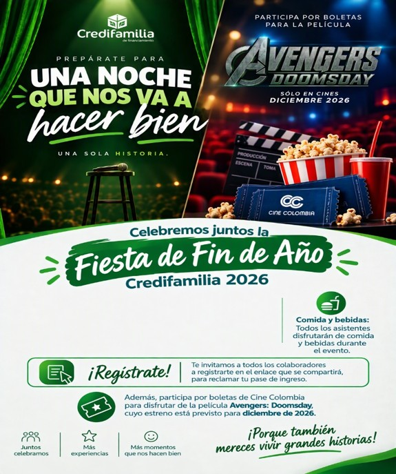
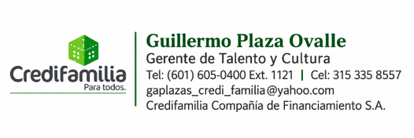

smart_toy Imágenes generadas con IA
La invitación y la firma de este ejercicio fueron creadas con inteligencia artificial. La pieza combina confianza corporativa, entretenimiento, beneficios personales, urgencia implícita y una invitación a entregar información mediante un registro.
Objetivo: que identifiques señales sospechosas sin asumir que una comunicación es legítima solo porque usa el nombre, los colores o la imagen de una organización conocida.
touch_app Pasa el cursor (o toca) sobre los puntos numerados de cada imagen para ver la señal de alerta.


Ofrecer boletas para una película popular como incentivo para que realices una acción.
Usar la identidad de una organización reconocida para disminuir las sospechas.
Asociar la invitación con celebración, entretenimiento, integración y beneficios.
La expectativa de recibir el enlace de inscripción motiva a buscarlo o abrirlo cuando llegue.
Usar una actividad propia del entorno laboral para que la comunicación parezca natural y esperada.
Estas técnicas coinciden con patrones documentados por CISA: mensajes que aparentan proceder de fuentes confiables, ofertas emocionalmente atractivas y solicitudes que conducen a enlaces o a la entrega de información.